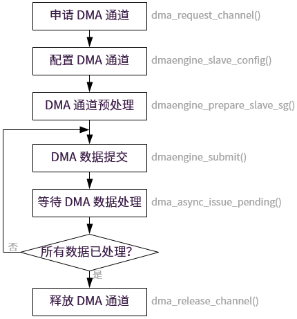

关键流程设计
15 Jan 2024
Read time: 1 minute(s)
本节介绍了 DMA 模块的关键流程。
初始化流程
DMA 驱动的初始化过程见 aic_dma_probe() 函数。
除了执行普通 platform 设备的处理过程，如申请 regs 资源、clk、reset 等，还需要调用 DMA 子系统的接口
dma_async_device_register() 来注册 DMA
备，示例如下：
int dma_async_device_register(struct dma_device *device)其中参数 struct dma_device 需要提供下列关键信息：
- DMA
控制器能力描述，包括但不限于地址宽度、传输方向以及剩余粒度。配置示例如下：
if (of_device_is_compatible(pdev->dev.of_node, "artinchip,aic-dma-v0.1")) sdev->slave.copy_align = DMAENGINE_ALIGN_128_BYTES; else sdev->slave.copy_align = DMAENGINE_ALIGN_8_BYTES; sdev->slave.src_addr_widths = AIC_DMA_BUS_WIDTH; sdev->slave.dst_addr_widths = AIC_DMA_BUS_WIDTH; sdev->slave.directions = BIT(DMA_DEV_TO_MEM) | BIT(DMA_MEM_TO_DEV); sdev->slave.residue_granularity = DMA_RESIDUE_GRANULARITY_BURST; INIT_LIST_HEAD(&sdev->slave.channels); dma_cap_set(DMA_PRIVATE, sdev->slave.cap_mask); dma_cap_set(DMA_MEMCPY, sdev->slave.cap_mask); dma_cap_set(DMA_SLAVE, sdev->slave.cap_mask); dma_cap_set(DMA_CYCLIC, sdev->slave.cap_mask);表 1. DMA 控制器的能力特性含义 能力特性 含义 DMA_PRIVATE 不支持异步传输 DMA_MEMCPY 支持内存到内存的拷贝操作 DMA_SLAVE 支持设备到内存的传输操作 DMA_CYCLIC 支持循环 Buffer 的情况 -
DMA 操作 API，初始化示例如下：
sdev->slave.device_free_chan_resources = aic_dma_free_chan_resources; sdev->slave.device_prep_dma_memcpy = aic_dma_prep_dma_memcpy; sdev->slave.device_prep_slave_sg = aic_dma_prep_slave_sg; sdev->slave.device_prep_dma_cyclic = aic_dma_prep_dma_cyclic; sdev->slave.device_config = aic_dma_config; sdev->slave.device_pause = aic_dma_pause; sdev->slave.device_resume = aic_dma_resume; sdev->slave.device_terminate_all = aic_dma_terminate_all; sdev->slave.device_tx_status = aic_dma_tx_status; sdev->slave.device_issue_pending = aic_dma_issue_pending; sdev->slave.device_release = aic_dma_device_release;
DMA Client 的调用流程
作为 DMA 用户，调用流程如下：

在 DMA Client 调用流程中：
-
dmaengine_submit()：将传输请求提交到 DMA Engine 的缓存中，但不开始传输数据。
-
dma_async_issue pending()：将传输请求加入到 DMA Device 的请求队列中，接下来才会启动数据传输。
中断处理流程
中断处理主要包含下列几个流程：
-
逐个 DMA 通道的查看完成状态。
-
如果当前传输是循环 Buffer 的情况，则直接调用预先注册好的回调接口。
-
如果不是循环模式，则更新相应的通道状态为 Complete。